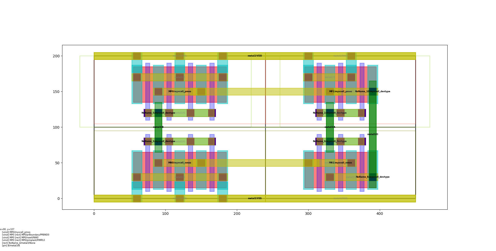

Trial¶
This document introduces setup procedure and trial example for begineers.
Colab tutorial¶
The easiest way of exercising laygo2 without installing it locally is using Colab; the example tutorial can be found here.
Installation¶
There are two ways of installing laygo2 in your environment; 1) cloning from github and 2) using pip.
Installing laygo2 from Github¶
Users can download and install the laygo2 package by cloning its github repository by typing the following command:
>>>> git clone https://github.com/niftylab/laygo2.git
It is highly recommended that the following command is used periodically to maintain the code to the latest version.
>>>> git pull origin master
After that, update the PHTHONPATH environment variable to point out the laygo2 package path for importing.
# (csh/tcsh example) add the following command to your .cshrc
setenv PYTHONPATH ${PYTHONPATH}:[LAYGO2_INSTALLATION_PATH]/laygo2
Installing laygo2 from Pypi¶
Instead of cloning github repository, laygo2 package can be installed by running the following pip command:
>>>> pip install laygo2
Technology setup¶
Users need to set up the following files in the laygo_tech directory to enable laygo2 for a new technology:
laygo2_tech_templayes.py # for templates
laygo2_tech_grids.py # for grids
laygo2_tech.yaml # for technology parameters
A bare-minimum tech setup for quick_start.py can be found here. A more complete tech setup example for gpdk045 can be found here.
Simple gate generation¶
Running the following command will generate a NAND gate layout.
(after git clone)
>>>> cd laygo2
>>>> python -m quick_start.py
(or you can run ipython and type run 'quick_start.py' instead)
The resulting layout of the NAND gate is shown in the figure below:
